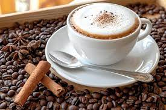
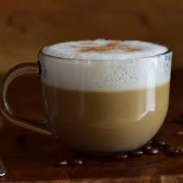
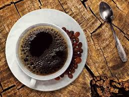

Espresso

Un shot de rico e intenso café negro hecho con un
método de preparación en el que una cafetera a
bomba impulsa el agua caliente a través del café
molido a alta presión (9 bares). Viene de la palabra
latina “expressus”, que significa “exprimido” o
“presionado”.
Capuchino
Un shot de espresso con leche al vapor y una gran
mota de espuma de leche, esparcida con cuchara
para mantener el calor. La proporción de espresso,
leche al vapor y espuma de leche suele ser de
1/3:1/3:1/3, respectivamente.
Espresso Macchitao

El macchiato es una bebida preparada con café
espresso al que se añade una pequeña cantidad de leche
vaporizada o espuma de leche para permitir que el sabor
del espresso siga destacando.
Cagfé Latte
Un latte o café latte es un tipo de café que
lleva una o dos medidas de espresso, mucha leche vaporizada
y una última y fina capa de espuma de leche por encima,
perfecta para hacerle algún dibujo o diseño.
Cafe Americano
El café americano es la bebida caliente ideal para
las personas que quieren tomar un delicioso espresso,
pero que no toleran el sabor tan intenso del espresso.
Porque el americano no es otra cosa que un espresso
con agua caliente, o más exactamente: un café que
consiste en partes exactamente iguales de espresso y agua.